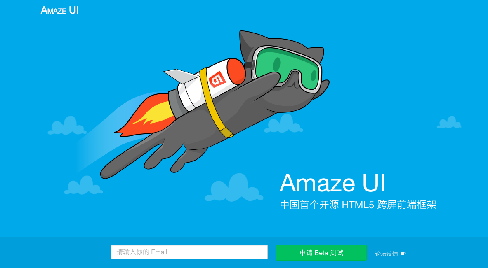

可以用一行JS代码将PC网站移动化的“云适配”开源跨屏前端开发框架，将推出Amaze UI
我们之前报道过的“云适配”是一家可以用一行JS代码将PC网站移动化的技术公司。在他们用一行代码做适配的过程中，积累了一套跨屏的前端常用网页组件，而最近，他们想把这套组件开源出来，让前端开发者都可以免费使用。
云适配将这套组件命名为“Amaze UI”，简单来说他是一个针对 HTML 5 开发的轻量级、模块化、移动优先的跨屏前端框架，通过拆分、封装了一些常用的网页组件，比如轮播图框、文字框等等组件，让前端开发者只用复制代码便可以将这些跨屏的组件写入自己的网页中，而不需要自己在开发的过程中重写一遍。
云适配创始人 Ben 和我说，以往的网站开发是先有 PC 版，然后得去为 PC 版适配一个移动版网页，而现在大家则渐渐趋向采用更聪明的做法，即先设计好简单的移动端，然后通过自适应的方式把 PC 端顺带做出来。所以在这样的趋势下，Amaze UI 可以帮前端开发者节省很多开发的时间。
不过，作为一个商业公司，云适配将前端开发工具开源出来会影响其营收吗？Ben 说开源一部分是因为他自己对开源的信仰，希望国内的创业公司也能渐渐一起来做这样的事，另一方面来说开源也是很好的商业模式，可以集聚大量的开发者，使之其中一部分转向云适配 PaaS 的付费用户——主要是抓住其中有在云端托管网站、想使用图片压缩等其他增值服务的群体，很大一部分会是建站公司。
国内其他的一些开源框架有腾讯的 JX、网易的 NEJ 等，国外最类似的框架则是Bootstrap，以及 Foundation 和 Semantic UI，不过相比之下 Amaze UI 封装了更多的组件，也加入了本土化的元素，比如可以适配 UC 浏览器、QQ 浏览器等。
目前 Amaze UI 正在内测中，感兴趣的开发者可以点击这里进入内测申请。